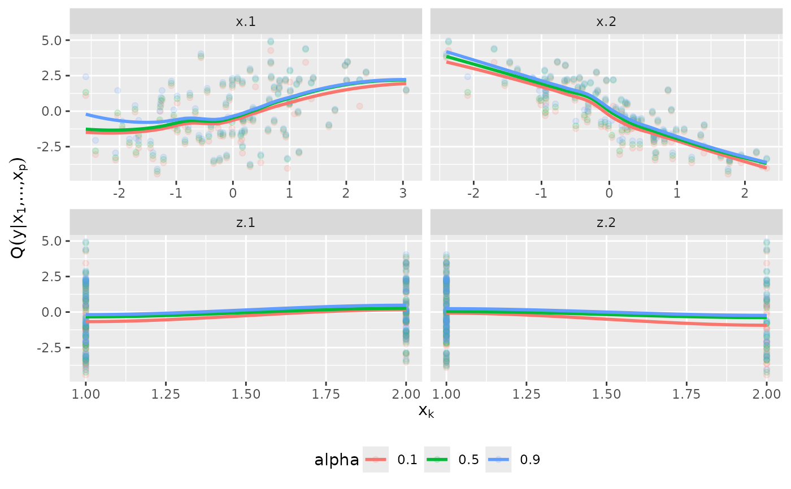

D-vine regression models
vinereg.RdSequential estimation of a regression D-vine for the purpose of quantile
prediction as described in Kraus and Czado (2017). If discrete variables
are declared as ordered() or factor(), jittering is used
to make them continuous (see cctools::cont_conv()). Although this may
make the model estimate inconsistent, predictions are usually still reasonable.
vinereg(formula, data, family_set = "parametric", selcrit = "loglik", order = NA, par_1d = list(), cores = 1, uscale = FALSE, ...)
Arguments
| formula | an object of class "formula"; same as |
|---|---|
| data | data frame (or object coercible by
|
| family_set | see |
| selcrit | selection criterion based on conditional log-likelihood.
|
| order | the order of covariates in the D-vine, provided as vector
of variable names (after calling |
| par_1d | list of options passed to |
| cores | integer; the number of cores to use for computations. |
| uscale | logical indicating whether the data are already on copula scale (no margins have to be fitted). |
| ... | further arguments passed to |
Value
An object of class vinereg. It is a list containing the elements
- formula
the formula used for the fit.
- selcrit
criterion used for variable selection.
- model_frame
the data used to fit the regression model.
- margins
list of marginal models fitted by
kde1d::kde1d().- vine
an
rvinecopulib::vinecop_dist()object containing the fitted D-vine.- stats
fit statistics such as conditional log-likelihood/AIC/BIC and p-values for each variable's contribution.
- order
order of the covariates chosen by the variable selection algorithm.
- selected_vars
indices of selected variables.
Use predict.vinereg() to predict conditional
quantiles. summary.vinereg() shows the contribution of each selected
variable with the associated p-value derived from a likelihood ratio test.
References
Kraus and Czado (2017), D-vine copula based quantile regression, Computational Statistics and Data Analysis, 110, 1-18
See also
Examples
# simulate data x <- matrix(rnorm(300), 100, 3) y <- x %*% c(1, -1, 2) dat <- data.frame(y = y, x = x, z = as.factor(rbinom(100, 3, 0.5))) # fit vine regression model (fit <- vinereg(y ~ ., dat))#> D-vine regression model: y | x.3, x.2, x.1, z.2, z.1, z.3 #> nobs = 100, edf = 44.82, cll = -59.27, caic = 208.19, cbic = 324.95# inspect model summary(fit)#> var edf cll caic cbic p_value #> 1 y 7.819436 -214.28648666 444.21185 464.58281 NA #> 2 x.3 2.000000 36.00604742 -68.01209 -62.80175 2.305538e-16 #> 3 x.2 4.000000 44.17047155 -80.34094 -69.92026 2.963893e-18 #> 4 x.1 5.000000 73.33891584 -136.67783 -123.65198 6.800346e-30 #> 5 z.2 7.000000 1.02910989 11.94178 30.17797 9.565478e-01 #> 6 z.1 8.000000 0.43888433 15.12223 35.96359 9.989089e-01 #> 7 z.3 11.000000 0.02936016 21.94128 50.59815 1.000000e+00plot_effects(fit)#>#> Warning: pseudoinverse used at -0.005#> Warning: neighborhood radius 1.005#> Warning: reciprocal condition number 0#> Warning: There are other near singularities as well. 1.01#> Warning: pseudoinverse used at -0.005#> Warning: neighborhood radius 1.005#> Warning: reciprocal condition number 0#> Warning: There are other near singularities as well. 1.01#> Warning: pseudoinverse used at -0.005#> Warning: neighborhood radius 1.005#> Warning: reciprocal condition number 0#> Warning: There are other near singularities as well. 1.01#> Warning: pseudoinverse used at -0.005#> Warning: neighborhood radius 1.005#> Warning: reciprocal condition number 0#> Warning: There are other near singularities as well. 1.01#> Warning: pseudoinverse used at -0.005#> Warning: neighborhood radius 1.005#> Warning: reciprocal condition number 0#> Warning: There are other near singularities as well. 1.01#> Warning: pseudoinverse used at -0.005#> Warning: neighborhood radius 1.005#> Warning: reciprocal condition number 0#> Warning: There are other near singularities as well. 1.01#> Warning: at -0.005#> Warning: radius 2.5e-05#> Warning: all data on boundary of neighborhood. make span bigger#> Warning: pseudoinverse used at -0.005#> Warning: neighborhood radius 0.005#> Warning: reciprocal condition number 1#> Warning: There are other near singularities as well. 1.01#> Warning: zero-width neighborhood. make span bigger#> Warning: Computation failed in `stat_smooth()`: #> NA/NaN/Inf in foreign function call (arg 5)# model predictions mu_hat <- predict(fit, newdata = dat, alpha = NA) # mean med_hat <- predict(fit, newdata = dat, alpha = 0.5) # median pred <- predict(fit, newdata = dat, alpha = c(NA, 0.5)) # both # observed vs predicted plot(cbind(y, mu_hat))## fixed variable order (no selection) fit <- vinereg(y ~ ., dat, order = c("x.3", "x.1", "x.2", "z.1")) fit#> D-vine regression model: y | x.3, x.1, x.2, z.1 #> nobs = 100, edf = 25.82, cll = -66.37, caic = 184.38, cbic = 251.64